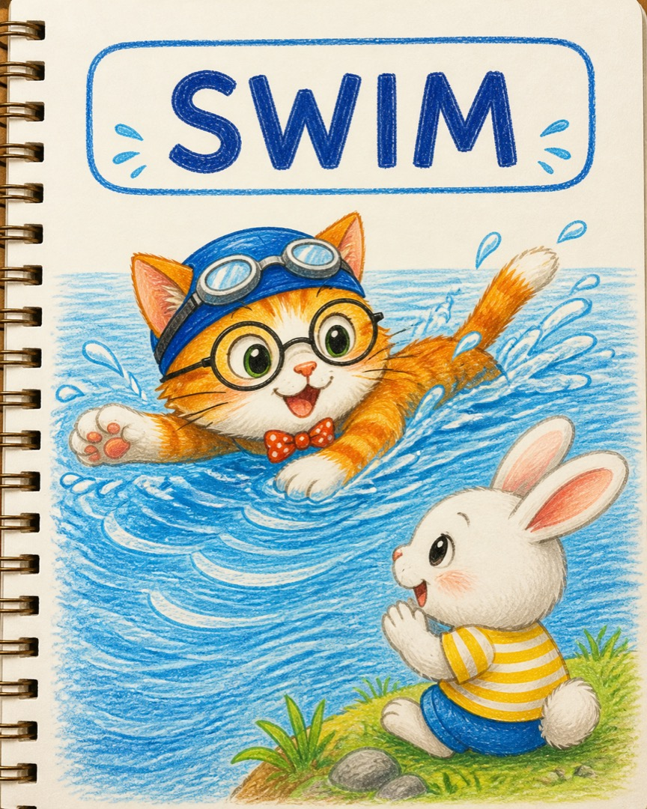
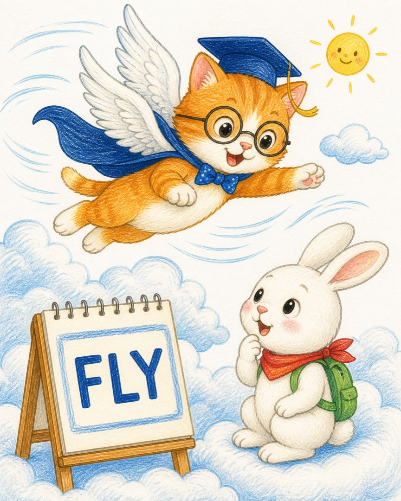
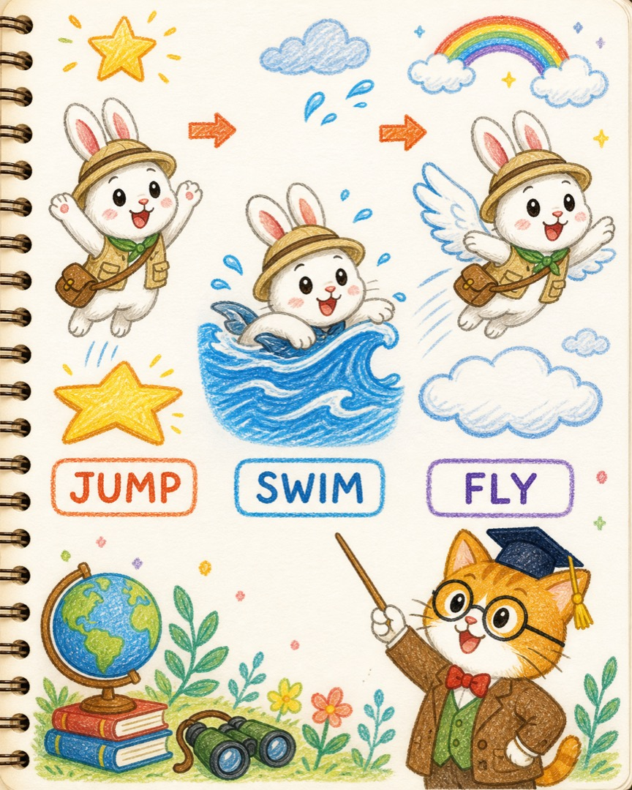
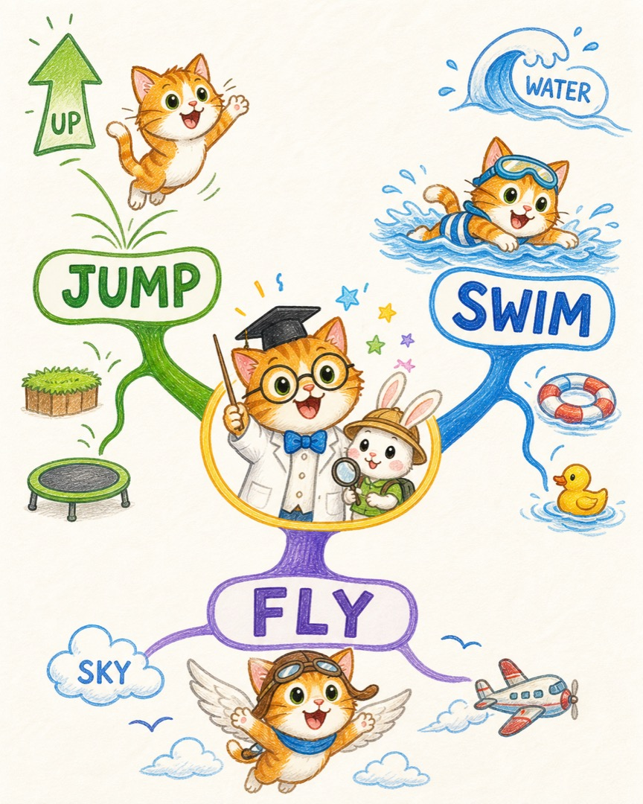

喵博士的小猫宇宙笔记
兔兔的三个动作英文
喵呜，探险家，今天兔兔带回了三颗会动的英文星星。我们不把它们关进单词本，而是让身体和小猫一起把它们叫醒！
一、核心翻译：动作会发光
在我们的世界里，那其实是每一个动作都有一只负责报信的小猫。兔兔一动起来，动作小猫就会把英文单词举到空中。
JUMP
跳
身体向上，像弹簧猫
SWIM
游泳
手臂划水，像水獭猫
FLY
飞
离开地面，像云朵猫
记忆小钥匙：先做动作，再喊英文。身体就是兔兔的第二本单词书。
二、故事板：兔兔的动作小队
- 往上弹，小猫举起 JUMP。
- 在水里划，小猫举起 SWIM。
- 飞到空中，小猫举起 FLY。
- 三个动作连起来，就是兔兔的英文动作小队。
三、第一只动作猫：JUMP
JUMP! JUMP! JUMP!
兔兔的脚爪一蹬，身体离开地面，跳过小石头。只要身体先向上弹，JUMP 小猫就会亮灯。喊的时候可以把双手举高，和兔兔一起跳一下。

四、第二只动作猫：SWIM
SWIM! SWIM! SWIM!
兔兔来到蓝色的水面上，手臂一前一后地划，水纹就跟着向后跑，身体向前走。在水里用手脚移动，就是 SWIM。喊的时候两只手交替做划水动作。

五、第三只动作猫：FLY
FLY! FLY! FLY!
兔兔张开翅膀，离开地面，风从身边呼呼跑过，云朵在脚下。在天空中移动，就是 FLY。喊的时候张开双臂，像翅膀一样从云朵上飞过去。

六、场景四：三个动作排队出发
JUMP → SWIM → FLY
现在三只动作猫要出发了：先从地面跳起来，再到水里游起来，最后到天空飞起来。顺序不是死记硬背，而是一条兔兔真的走过的路线。

JUMP
向上弹
向上弹
SWIM
水里划
水里划
FLY
空中走
空中走
七、喵博士总结图
所以，兔兔今天学到的不是三串冷冰冰的字母，而是三种能被身体叫醒的行动：
JUMP 是向上，SWIM 是在水里前进，FLY 是在天空中移动。

这就是喵博士与探险家共同找到的答案：让兔兔先动起来，JUMP、SWIM、FLY 三只英文动作猫就会从记忆里跑出来。
最后，喵博士把小爪子伸出来问一问：如果兔兔先在水里游，再跳上云朵，哪一只动作猫会先亮灯呢？